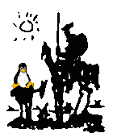
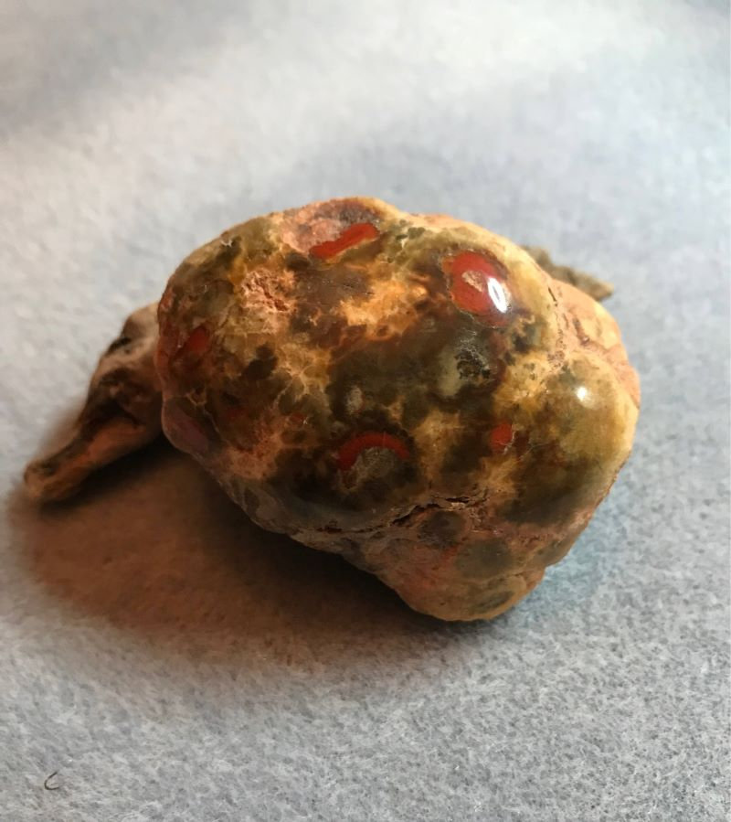
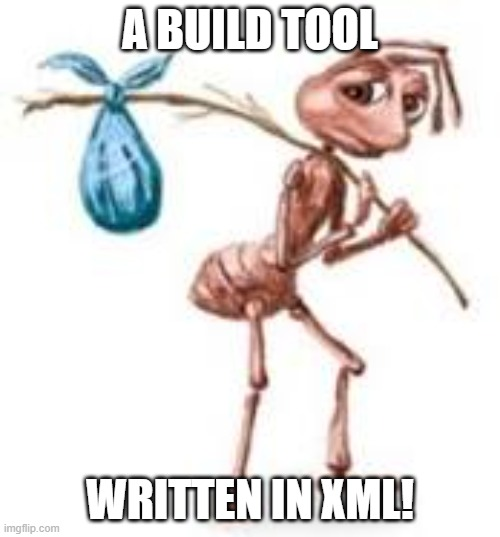
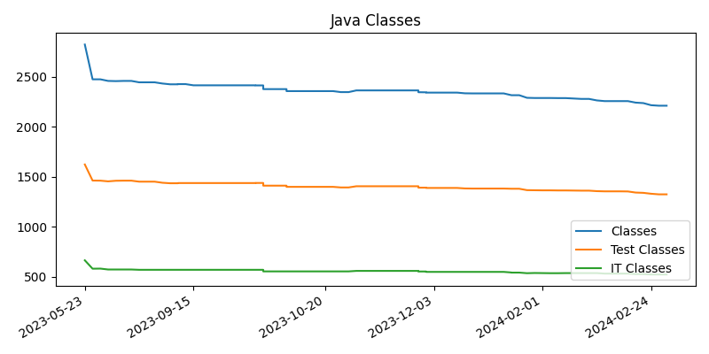
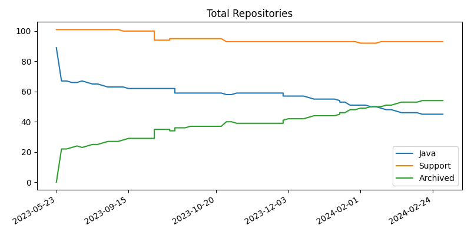

Long Lived
Maven Projects
Tim . Pizey . UK

Presenter Notes
Keep polishing

Presenter Notes
Talk Structure
The Road to Maven
Long Lived Projects
Current Project
Take Aways
Presenter Notes
The Road to Maven
bash
make
ant
maven
maven2
maven3
gradle
Presenter Notes
Bash
hereRaw= `dirname $0`
if [ "$hereRaw" = . ] ; then
here=
else
here="$hereRaw/"
fi
echo -e "Compiling using $JAVAC\n"
ldb="$here"org.melati.LogicalDatabase.properties
ldbe="$ldb.example"
if [ ! -e "$ldb" ] && [ -e "$ldbe" ] ; then
echo >&2 -e "*** warning: $ldb not found, \nso creating new $ldb from" \
"$ldbe\n\n"
cp $ldbe $ldb
fi
Presenter Notes
[ -e "$ldb" ] &&
wronglines=`grep -v '^[[:space:]]*[#!]' "$ldb" | fgrep -n jdbc1` &&
echo -e >&2 "*** warning: your $ldb mentions jdbc1 rather than jdbc2" \
"in the following lines:\n\n$wronglines\n\n" \
"You must use JDK1.2 with Melati now, so you should change them to jdbc2."
Presenter Notes
The Good Bit
find "$hereRaw" \( -path "$hereRaw/playing" -o \
-path "$hereRaw/doc/example" -o \
-path "$hereRaw/test" -o \
-path "$hereRaw/template" \) \
-prune -o \
-name '*.java' -print0 | xargs -0 $JAVAC
Presenter Notes
Make
.PHONY: all
all:
@echo "Warning: at present this (FIXME) doesn't rescan Poem.dsd"
@echo "(which doesn't matter for most users)"
@echo
./compile.sh
Presenter Notes
ant

Presenter Notes
ant
<!--
In order to compile WebMacro, you may need to set these environment variables
JAVACC_HOME: your JavaCC installation home
-->
<!--
Note, you will need ANT 1.5.x, available from:
http://jakarta.apache.org/ant
-->
<project name="WebMacro" default="usage" basedir=".">
<target name="usage">
<echo><![CDATA[
Usage:
ant TARGET [-Dproperty1=value -DpropertyN=value]
Presenter Notes
<target name="compile" depends="prepare, precompile">
<filter token="VERSION" value="${version}" />
<filter token="BUILD_DATE" value="${TODAY}" />
<copy todir="${tmpdir}" filtering="true">
<fileset dir="src" />
</copy>
<javac srcdir="${tmpdir}"
fork="yes"
destdir="${classes}"
debug="on" optimize="off" deprecation="off">
<classpath refid="class.path" />
</javac>
<copy todir="${classes}">
<fileset dir="${tmpdir}" includes="**/*.properties" />
</copy>
<copy file="WebMacro.defaults.${wm-style}" tofile="${classes}/WebMacro.defaults"/>
<touch file="${classes}/WM-VERSION-${version}" />
</target>
Presenter Notes
Maven
Presenter Notes
Maven - the name
"Someone who is dazzlingly skilled in any field.
synonyms: ace, adept, champion, genius, hotshot, sensation, star, superhero, superstar, virtuoso, whiz, whizz, wiz, wizard."
(not known outside of US)
Presenter Notes
Maven History
Presenter Notes
Maven (1)
It's all about the POM
and the docs
Presenter Notes
Maven2
.m2/repository
Yay!
Maven3
Err
Gradle
Whatever
Presenter Notes
Long Lived Maven Projects
Maven is the longest lived Maven project
Presenter Notes
Current Project
Presenter Notes
Pom Lines
find * -name pom.xml |xargs wc -l
Was : 40675
Is: 23525
Presenter Notes
Presenter Notes
I am a blogger Blogs are good.
∀
Presenter Notes
For all
Presenter Notes
Git Tombstones
Presenter Notes
Git Tombstones
- Nothing is lost in git, delete with confidence
- Out of sight out of mind
Presenter Notes
rememberance.md
| File | Date | Reason | |---------------------|:----------:|:-----------------------------------------| | maven-tomcat-plugin | 2013-11-11 | Who knows, the team just walked away | | tpp-module | 2024-02-22 | Finished polishing, flushing now | | my-perl-script.pl | 2019-03-23 | Moving on up |
Presenter Notes
GhatGPT
What happens when you use Maven for a long time?
Using Maven for a long time can lead to various outcomes, both positive and negative, depending on how it's utilized and the context of its usage. Here are some potential scenarios:
Presenter Notes
Increased Project Stability:
Over time, as you become more familiar with Maven, your project setups become more standardized and stable. Maven's dependency management ensures that your project remains consistent and avoids dependency conflicts, leading to fewer build errors and smoother development processes.
Presenter Notes
Efficient Build Management:
With experience, you become more proficient in configuring Maven builds efficiently. You might create custom plugins or optimize configurations to streamline the build process, leading to faster builds and improved productivity.
Presenter Notes
Dependency Management Challenges:
As projects grow larger and dependencies proliferate, managing them can become increasingly complex. Dependency conflicts, version mismatches, and transitive dependencies can lead to headaches and require careful management to avoid runtime issues.
Presenter Notes
Build Tool Fatigue:
While Maven is powerful, it's not the only build tool available. After using it for a long time, some developers might start feeling its limitations or desire to explore alternative build tools like Gradle or Bazel for specific projects or scenarios.
Presenter Notes
Maintenance Overhead:
As projects evolve, maintaining Maven configurations can become time-consuming, especially if the project structure or dependencies need frequent updates. Keeping up with new releases, security patches, and best practices can also require ongoing effort.
Presenter Notes
Community Support and Resources:
Long-term use of Maven often means tapping into a vast community of users and resources, including documentation, forums, and plugins. This ecosystem can provide valuable insights, solutions to common problems, and opportunities for collaboration.
Presenter Notes
Dependency Ecosystem Changes:
Over time, the libraries and frameworks your project depends on might evolve or even become deprecated. Staying abreast of these changes and updating dependencies accordingly is essential to ensure the long-term viability and security of your project.
Presenter Notes
In summary, using Maven over the long term can lead to greater stability, efficiency, and community support for your projects. However, it also comes with challenges such as dependency management complexity and ongoing maintenance overhead. Adaptability and staying informed about best practices and ecosystem changes are key to maximizing the benefits of long-term Maven usage.
Presenter Notes
ChatGPT
Tim:Keep answers short and to the pointCGPT:With prolonged use of Maven, you may encounter dependency conflicts, build errors, and potentially slower build times due to the accumulation of dependencies and configurations. It's important to regularly update dependencies and plugins to mitigate these issues.
Presenter Notes
Imports
Presenter Notes
Progress
Presenter Notes
Artefacts

Presenter Notes
Classes

Presenter Notes
Ignored Tests

Presenter Notes
Java Repositories

Presenter Notes
Java Repositories Stacked

Presenter Notes
Total Repositories

Presenter Notes
Total Repositories Stacked

Presenter Notes
Profiles

Presenter Notes
DRY
Presenter Notes
Do NOT Repeat Yourself
Presenter Notes
Mono-Repo
Presenter Notes
#monolithsGood
Presenter Notes
!python --linenos=no
def log(self, message, level='notice'):
if self.logger and not callable(self.logger):
raise ValueError(u"Invalid logger set, must be a callable")
if self.verbose and self.logger:
self.logger(message, level) !python
def log(self, message, level='notice'):
if self.logger and not callable(self.logger):
raise ValueError(u"Invalid logger set, must be a callable")
if self.verbose and self.logger:
self.logger(message, level)
Presenter Notes
public classMyClass {
}
Presenter Notes
<properties>
<git.repo.name>module23</git.repo.name>
</properties>
<scm>
<connection>scm|git|ssh://git@github.com/timp/${git.repo.name}</connection>
<developerConnection>scm|git|ssh://git@github.com/timp/${git.repo.name}</developerConnection>
<url>scm|git|ssh://git@github.com/timp/${git.repo.name}</url>
<tag>HEAD</tag>
</scm>
Presenter Notes
Work around Maven 'inheritance'
<scm
child.scm.connection.inherit.append.path="false"
child.scm.developerConnection.inherit.append.path="false"
child.scm.url.inherit.append.path="false">
<connection>scm|git|ssh://git@github.com/timp/${git.repo.name}</connection>
<developerConnection>scm|git|ssh://git@github.com/timp/${git.repo.name}</developerConnection>
<url>scm|git|ssh://git@github.com/timp/${git.repo.name}</url>
<tag>HEAD</tag>
</scm>
Presenter Notes
<properties>
<git.repo.name>module23</git.repo.name>
</properties>
Presenter Notes
Archiving
- Merge all branches
- Close all pull request
- If not passing tests document in README
- Put reason for archiving in README
- Mark as archived in github
Archiving is scary so should be done by a Team Lead
Presenter Notes
Versioning
Date.Build ?
!XML
<dependency>
<groupId>commons-io</groupId>
<artifactId>commons-io</artifactId>
<version>20030203.000550</version>
<scope>test</scope>
</dependency>
For those without Groups:
!XML
<dependency>
<groupId>hsqldb</groupId>
<artifactId>hsqldb</artifactId>
<version>1.8.0.1</version>
<scope>compile</scope>
</dependency>
<dependency>
<groupId>com.elsevier.smd</groupId>
<artifactId>smd-local-dynamodb-support</artifactId>
<version>2017-03-01</version>
</dependency>
<dependency>
<groupId>org.eclipse.jetty</groupId>
<artifactId>jetty-security</artifactId>
<version>8.1.7.v20120910</version>
<scope>test</scope>
</dependency>
Presenter Notes
Do not use properties for versions
Naming is hard
Do not introduce a new, private, unvalidated property naming system
!XML
<properties>
<aws.sdk.version>1.12.287</aws.sdk.version>
</properties>
<dependency>
<groupId>com.amazonaws</groupId>
<artifactId>aws-java-sdk-dynamodb</artifactId>
<version>${aws.sdk.version}</version>
</dependency>
<dependency>
<groupId>com.amazonaws</groupId>
<artifactId>aws-java-sdk-sqs</artifactId>
<version>${aws.sdk.version}</version>
</dependency>
<dependency>
<groupId>com.amazonaws</groupId>
<artifactId>aws-java-sdk-core</artifactId>
<version>${aws.sdk.version}</version>
</dependency>
<dependency>
<groupId>com.amazonaws</groupId>
<artifactId>aws-java-sdk-sns</artifactId>
<version>${aws.sdk.version}</version>
</dependency>
Presenter Notes
Take Aways
Presenter Notes
Take Aways
- Module sequential artifact id needs to be project scoped
- Open Source library maintainers are not responsible for updating their clients, Enterprise Developers are
- Don't use properties for versions
- Archiving is a Team Lead responsibility
Presenter Notes
Questions ?
Presenter Notes
More thoughts
- Always have Darkslide open
- N5 versioning, inherit, no version properties
Presenter Notes
Colophon
Tip: Keep a Darkslide slide deck open!